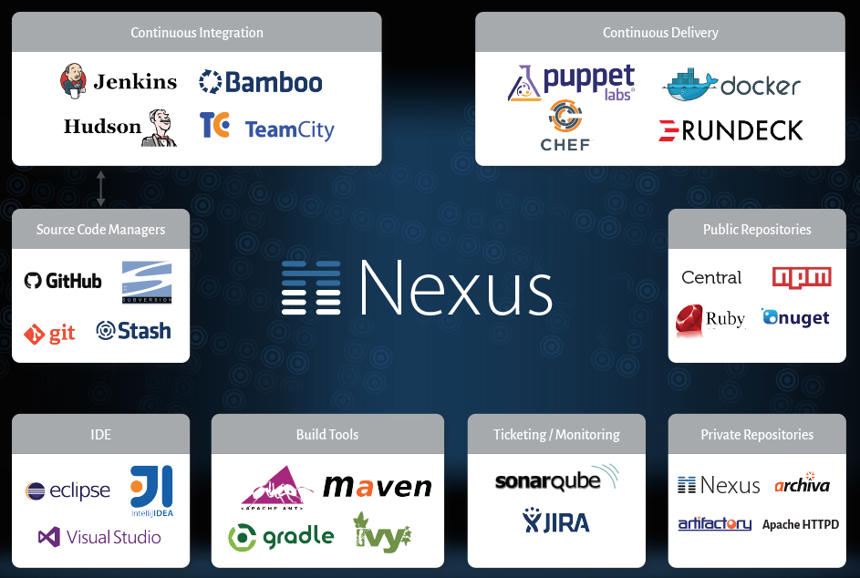

Sonatype
Silver Sponsor
Sonatype / Nexus Looking for ways to go even faster and still deliver great software? Frustrated with rework from non-functional defects? Are open source governance processes slowing you down? Visit with the Sonatype team to learn how you can gain a continuous advantage with Nexus. 5x more developers use Nexus than any other repository manager and we are doing lots of cool new things to speed build and delivery cycles, improve build quality and reduce unplanned work. Oh, and we’ll have some free Nexus Unicorn t-shirts! www.sonatype.com
